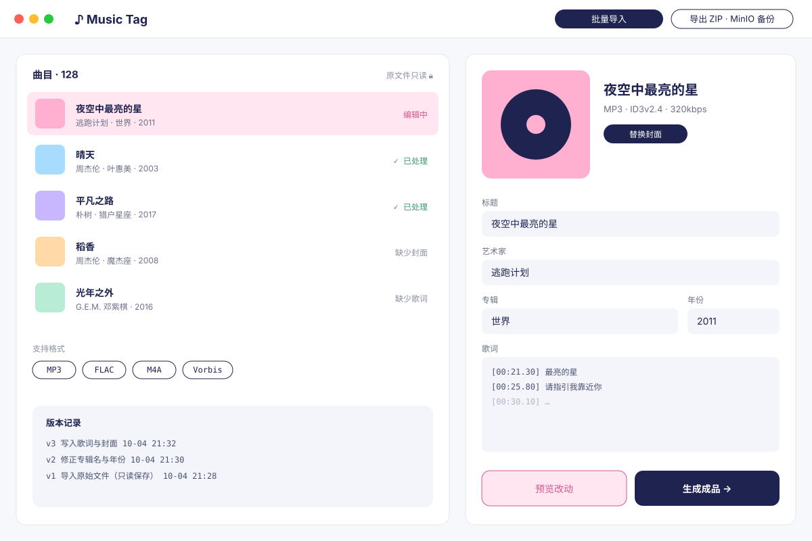
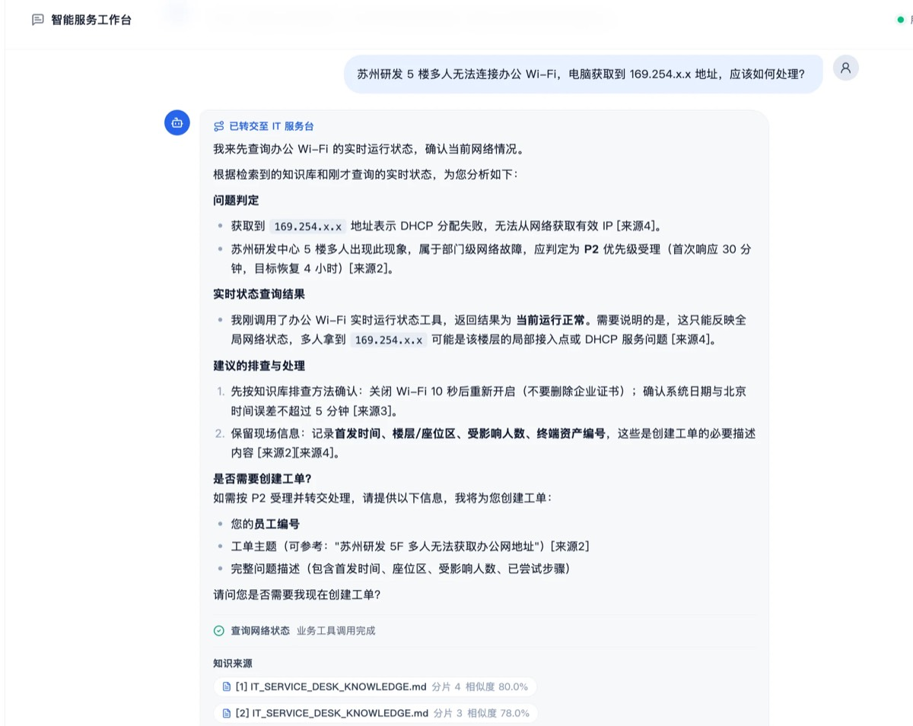
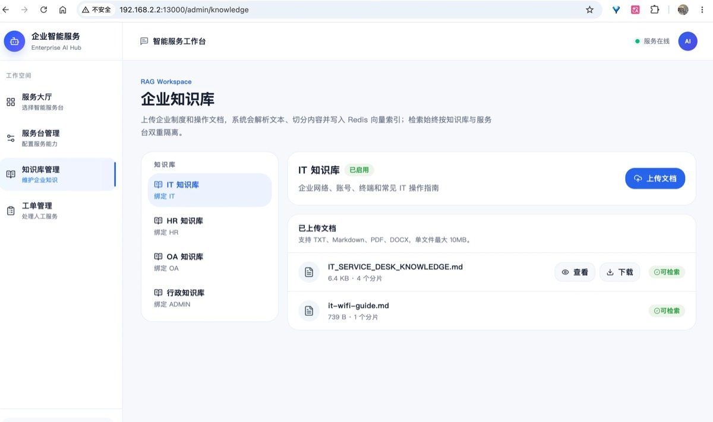

Code to
Stories
I used to write code. Now I tell stories.
Hi, I'm xyf.
I spent years as a Java backend developer, building with Spring Boot, microservices and AI Agents. Somewhere along the way I realized I'd rather explain complicated things clearly than ship one more API. Now I make videos, talking about AI tools, tech and the world around us from a developer's point of view.
Latest video
I built a music tagging tool with Codex, and Claude didn't stand a chance
A developer builds a music tagging tool from scratch with Codex, then puts Claude to the same test. The tool is open source too: it's Music Tag, listed under Work below.
SHIPPED

Music Tagv1.0.0 · tag editor xyf527/music-tagShippedrelease: prepare Music Tag 1.0.0
005ec21Oct 4, 2026 Enterprise AI Serviceservice desk dashboard xyf527/Enterprise-AI-ServiceShippedAdd a LangGraph ticket workflow with a high-risk request guard
3283eb6Aug 24, 2026 xyf527/music-tagShippedfeat: verify M4A and Vorbis support
e56c65cOct 4, 2026
Enterprise AI ServiceRAG chat with sources xyf527/Enterprise-AI-ServiceShippedAdd automated test, build and deploy for the Python worker
b036553Aug 24, 2026
Enterprise AI Serviceknowledge base xyf527/music-tagShippedfeat: add optional backups and lifecycle recovery
b9a1c01Oct 4, 2026Things I've built
Enterprise AI Service
An enterprise AI service desk: multi-model streaming chat, RAG knowledge base, controlled tool calling, multi-agent routing and human hand-off tickets.
View repo →Music Tag
A local music tag manager: batch editing, lyrics and cover art, version history. It never overwrites your original files.
View repo →Code Review AI Agent
Lets AI take the first pass at code review, so agents handle the repetitive parts.
View repo →// when I code
// when I make content
Want to talk AI, content creation, or build something together? Say hi.
Drop me a line ↗This visit, recordedNothing leaves your browser